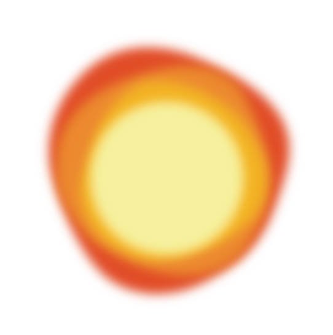
柔和扩散
把锐利的照明边界化开，留下像日落贴近墙面时的暖柔光感。
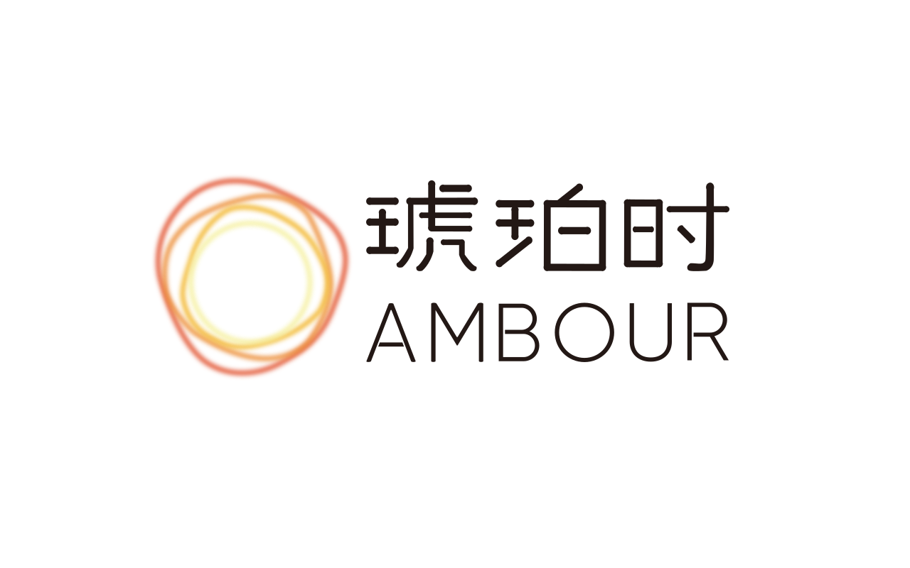
light, slowed down

把锐利的照明边界化开，留下像日落贴近墙面时的暖柔光感。
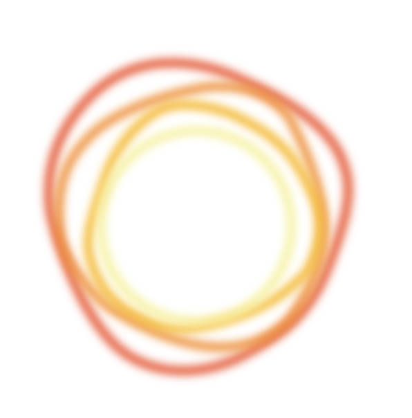
由明到暗的色温层次，让床边、书桌和角落都拥有可停留的暮色。
从 1800K 到 2700K，减少屏幕后夜晚的紧绷感，把白日疲惫轻轻推远。
dusk effects
光效作为四种暮色样本在页面里浮动：像云层后的日落、墙面的反光、睡前渐暗的暖晕，也像灯罩里被封存的一圈余辉。

collection
以圆盘、层叠、穹顶与弧线为基础，琥珀时把灯具做成房间里的小型夕阳。它不抢走空间，只改变夜晚的速度。
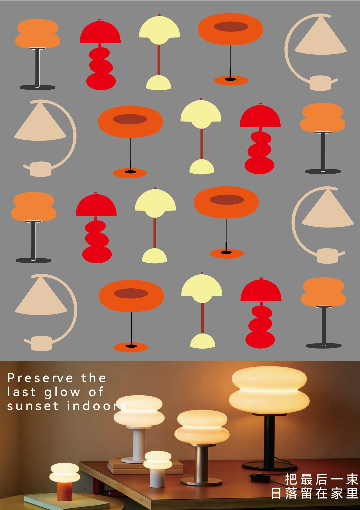
hover the lamps
把鼠标停在灯具平面图上，每一盏灯会抬起、发光并缓慢旋转，模拟从品牌图形到产品实物的过渡。
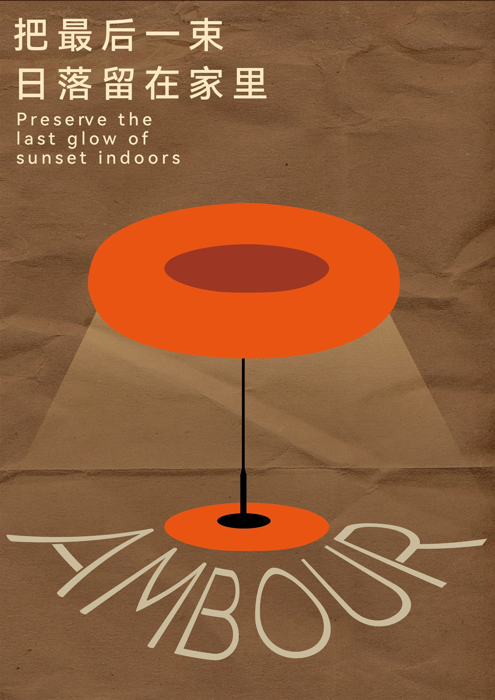
brand story
当夕阳缓缓落下，光线由明亮转为柔和，世界也随之放慢节奏。这段短暂的暮色，不仅是昼夜交替的瞬间，更是身体与情绪准备进入休息状态的自然信号。
琥珀时希望延续这份稍纵即逝的黄昏，以贴近自然节律的光线设计，让黄昏不止停留在窗外，而是走进卧室、融入生活，陪伴每一个夜晚温柔开始。
Preserve the last glow of sunset indoors.
brand materials
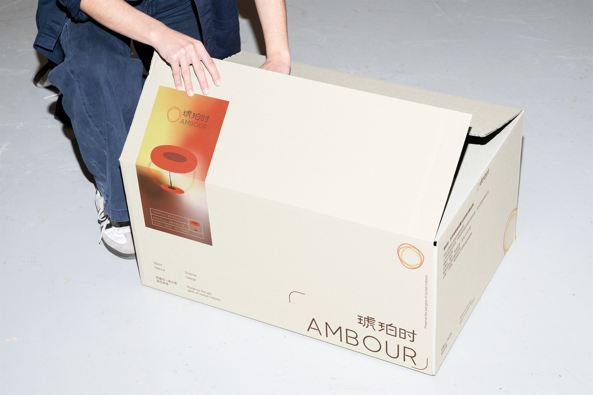
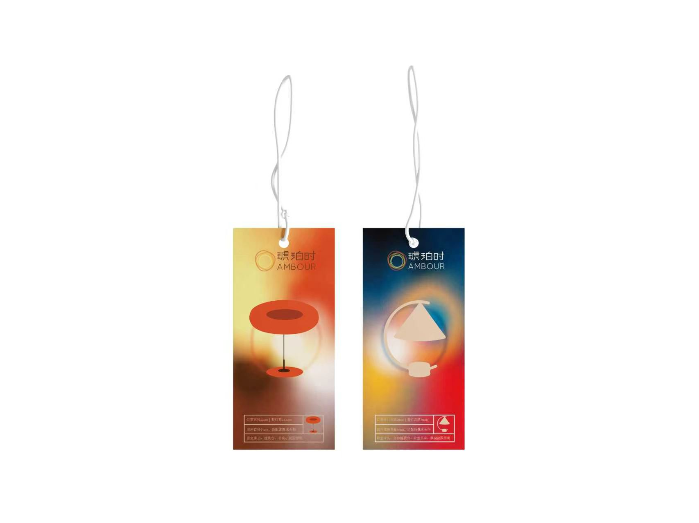
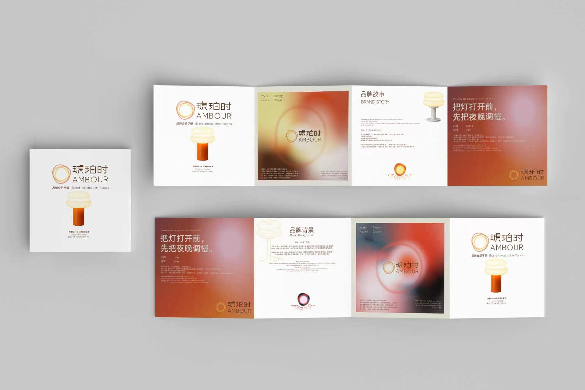
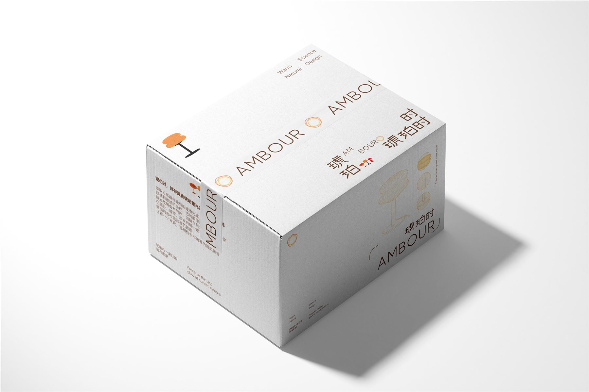
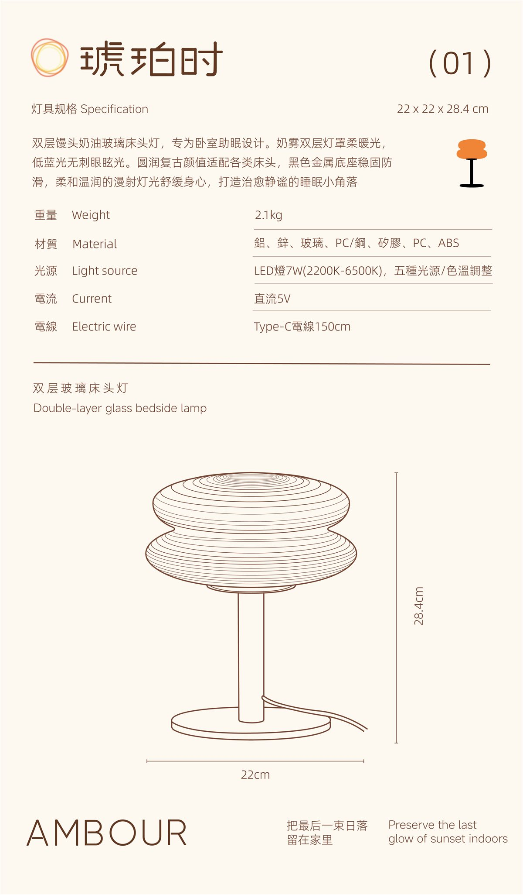
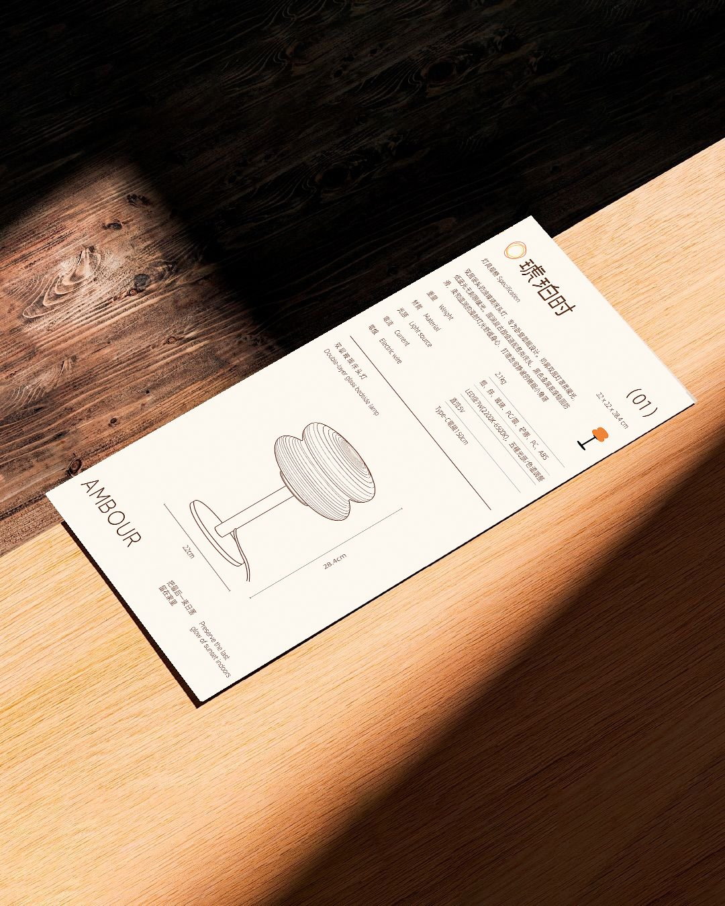
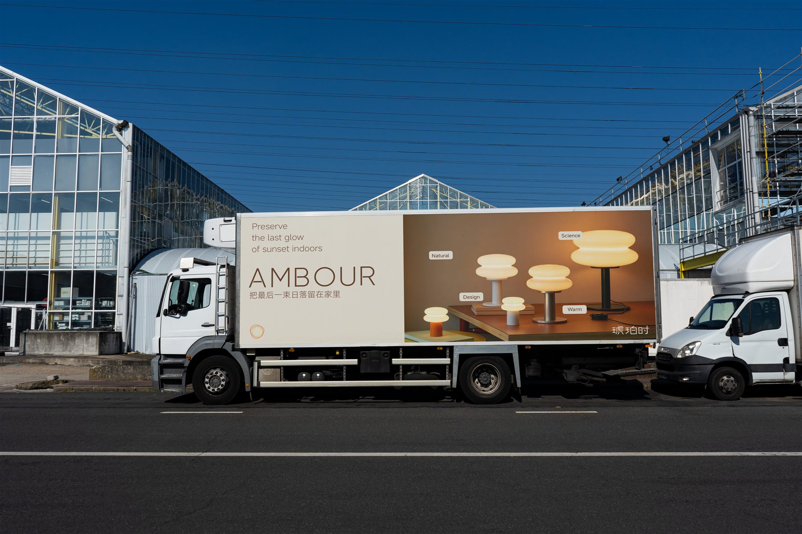
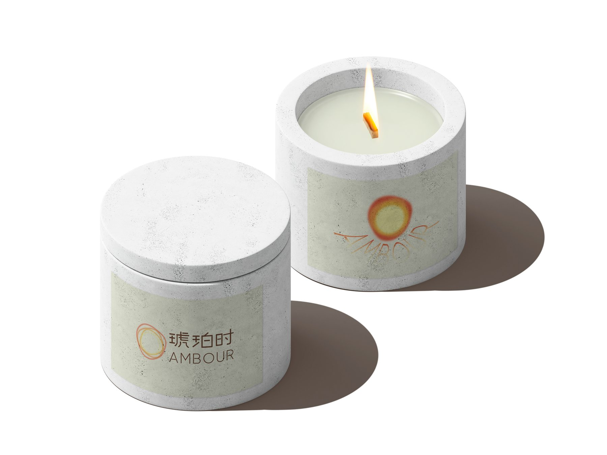
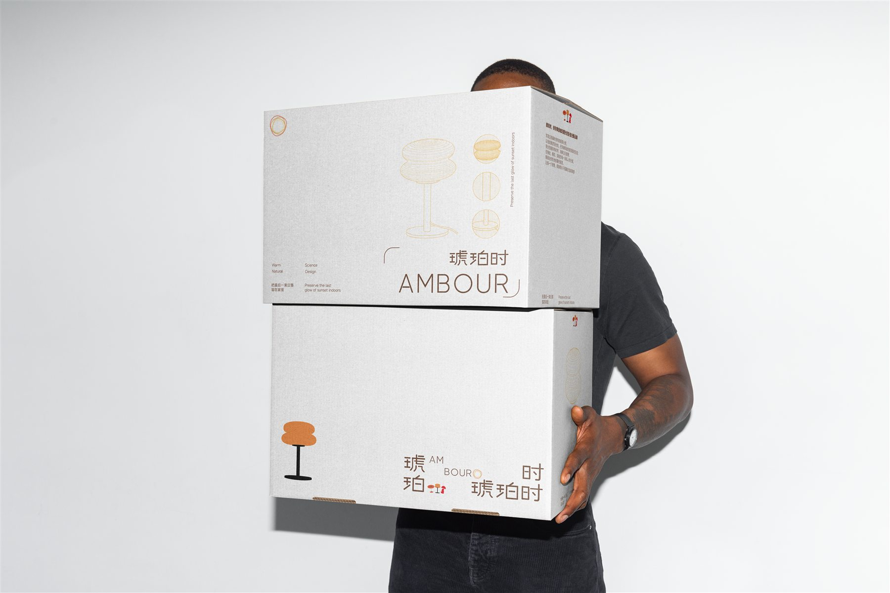
visual system
琥珀时，封存黄昏琥珀霞光的卧室光影品牌。萃取日落暮色独有的暖柔光感，以低刺激琥珀光线，把转瞬即逝的黄昏留驻卧室；用光放缓匆匆时序，消解白日疲惫，在独处、睡前、深夜的每一段私人时光里，铺展治愈松弛的暮色氛围，让每一个夜晚，都拥有永不落幕的温柔黄昏。
try the amber hour
根据你的睡前场景，页面会切换成更柔和的品牌色试光卡。